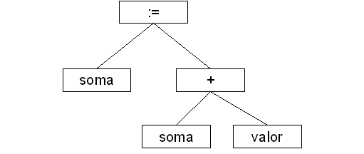

Voltar
Índice
Voltar
Índice
ANÁLISE SINTÁTICA
A análise sintática tem como função verificar se a construção usadas no programa estão gramaticalmente corretas (PRICE; TOSCANI, 2001). O analisador sintático recebe as cadeias de tokens vindo do analisador léxico, faz a verificação se a mesma pode ser gerada pela gramática e o analisador sintático detecta erros de sintaxe se existirem (AHO; SETHI; ULMANN, 1995).
O resultado da análise sintática geralmente é representado como uma árvore sintática. Como por exemplo, no caso da cadeia de tokens “soma := soma + valor”. Considerando que 'soma' e 'valor' sejam considerados <variavel> da gramática apresentada, resultaria na seguinte árvore:
Figura
1: árvore sintática Fonte:
autor
Métodos de análise sintática
A análise sintática existem alguns métodos, como o algoritmo de Cocke-Younger-Kasami e o de Earley, mas estes são ineficientes para se usar num compilador de produção e as mais utilizadas são as formas Ascendentes (Top-down) e Descendentes (Bottom-up). Os analisadores sintáticos Ascendente constroem árvores do topo (raiz) para o fundo (folha). Já os analisadores Descendentes começa pela folhas e trabalham árvores acima até a raiz (AHO; SETHI; ULMANN, 1995).